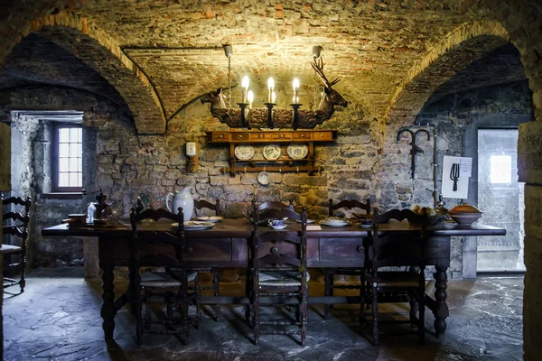
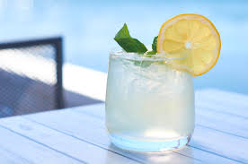

Come experience this historic city. It's fun for the whole family! Learn the history of the city through historic tours, see the magic of the College of the Herald, or go eat at one of our world famous taverns. Herald's Hold truely has something for everyone. Come see why the Morning Gazette called Herald's Hold "the number one travel location in Nocturn."
|  |  | |
See the College of the Herald. Explore it's historic halls, it's beautiful sculpture garden, or see the magical capablitiies of its students and staff. |
See contestants compete for a grand prize in a tournament at city center. You will have an experince like no other seeing the inhuman feats of our competitiors. |
Try the everlasting stew or the Ashen Lemonade at the world famous Nightengale Inn. The Nightengale Inn's local ingredients give their food a unique taste you can't get anwhere else. |
| Learn More | Learn More | Learn More |